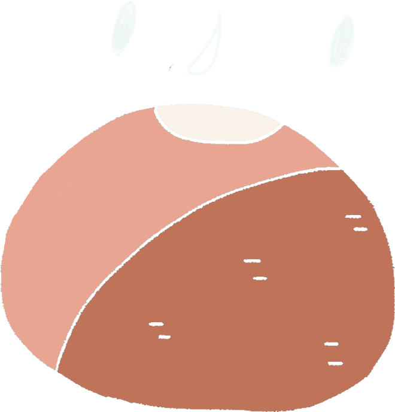
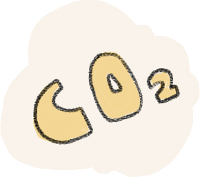
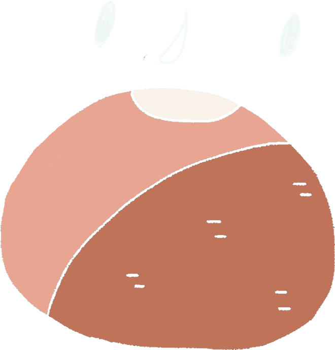
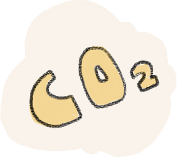

海水不會真的變「酸」哦！
海水是鹼性的（現今海水的pH 值約為8.1），即使在大氣二氧化碳濃度持續增加的影響下，未來海水的pH也仍將會大於7。
也就是說海洋酸化並不會使海水轉變為酸性，而是指海水鹼性逐漸變弱的現象。
一窺二氧化碳的旅程
你可能知道二氧化碳會導致極地生物難以生存
但你可能不知道：
地球上還有更多的生物因為過多的二氧化碳而生命受到威脅！


一窺二氧化碳的旅程
你可能知道二氧化碳會導致極地生物難以生存
但你可能不知道：
地球上還有更多的生物因為過多的二氧化碳而生命受到威脅！
海 洋
— 吸收二氧化碳的海綿
不只樹木行光合作用時會吸收二氧化碳
海洋也默默地吸收人為的二氧化碳，兩者都是減緩溫室效應的功臣呢！
每年大約有5億噸的溫室效應氣體儲存於海洋
近年來，人類所排放的二氧化碳越來越多
海洋大量吸收後，則導致了海水酸化
 







海水不會真的變「酸」哦！
海水是鹼性的（現今海水的pH 值約為8.1），即使在大氣二氧化碳濃度持續增加的影響下，未來海水的pH也仍將會大於7。
也就是說海洋酸化並不會使海水轉變為酸性，而是指海水鹼性逐漸變弱的現象。
海洋酸化
 負面影響是不利許多海洋生物的生長，徹底擾亂海洋的生態
像是珊瑚造礁能力降低，珊瑚礁分布面積縮小、
減慢貝類、蟹、龍蝦等海底生物的生長速度
媽媽說今年龍蝦班少了好多新朋友...
又要搬家了...
你知道影響珊瑚健康的還有「海水溫度」嗎？
試著調整左方的溫度計看看
珊瑚在幾度的海洋裡最迷人漂亮吧！
日常的減碳就可以減少地球的排碳量
生活中許多小細節若是一個沒注意就會增加碳排放
一起完成以下的減碳清單，把排放的二氧化碳降到最低吧！
減少家電待機時間
減少汽機車使用
在家中周邊種樹